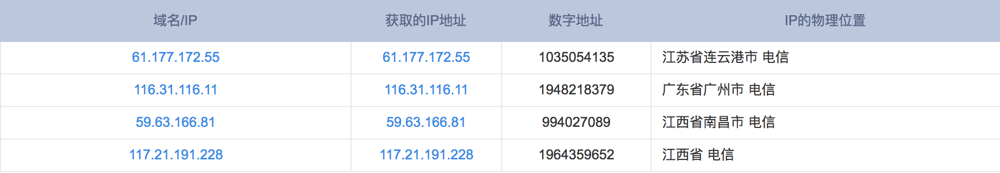

使用 Fail2ban（支持 Firewalld） 防御 VPS 被 SSH 暴力扫描
今天看了一下 VPS 上的日志，发现大量的莫名 IP 尝试暴力登录 SSH，震惊！我以为被攻击了，查了之后发现其实是有人在不断地扫描各个 IP 段的 22 端口，企图暴力破解，寻找肉鸡。并不是针对我的。不过这倒是提醒我要注意 VPS 的安全。
fail2ban 可以将重复登录失败的 IP 拉黑，在一段时间内禁止登录，保护服务器免受攻击。需要配合 iptables 使用。fail2ban 也支持配合 firewalld 使用，我选择后者咯。
谁在扫描我的 VPS？
我的系统版本是 CentOS 7，SSH 登录失败的日志信息保存在 /var/log/secure，查看了大小，有 34 M！
$ ls -lh /var/log/secure
-rw-------. 1 root root 34M Jun 1 02:35 /var/log/secure
把里面的 IP 抓出来看看，
$ grep 'Failed password for root from' /var/log/secure | awk '{print $11}' | sort | uniq -c | sort -nr | more
22466 61.177.172.55
22465 61.177.172.34
9644 116.31.116.11
7626 123.183.209.135
6240 59.63.166.81
4172 116.31.116.18
2645 202.109.143.117
1695 117.21.191.228
1550 113.195.145.21
1398 202.109.143.105
1258 202.109.143.113
817 202.109.143.15
727 222.186.190.156
376 89.87.134.19
364 113.195.145.52
159 112.74.63.26
90 193.105.134.184
42 61.219.166.125
30 168.90.120.43
30 117.204.128.249
...
最多的暴力登录次数有 22466 次！我到现在才发现这个问题，想想都怕。查询了前几名 IP 地址的物理位置，好奇为什么都是中国的。。

查询工具：IP 批量查询 - 站长工具
安装配置 fail2ban
epel 源里有 fail2ban，yum 安装：
$ sudo yum install fail2ban
fail2ban 配置文件在 /etc/fail2ban。里面有个 jail.conf，配置禁止 IP 的，这名字听着就舒服。不建议在这个配置文件里面修改，因为更新之后会被覆盖掉。合理的方法是新建 /etc/fail2ban/jail.local，作为自定义的的配置文件，里面的内容参考 jail.conf 里的。以下是 ssh 的配置：
$ cat /etc/fail2ban/jail.local
# 用于指定哪些地址可以忽略 fail2ban 防御
ignoreip = 127.0.0.1 172.31.0.0/24 10.10.0.0/24 192.168.0.0/24
# 客户端主机被禁止的时长（秒）
bantime = 86400
# 客户端失败多少次后将会被禁
maxretry = 3
# 查找失败次数的时长（秒）
findtime = 600
禁止的动作。action_mwl 这个动作表示禁止并邮件通知
action = %(action_mwl)s
[sshd]
enabled = true
fail2ban 已经支持 firewalld，如果按照上面的配置写就是配合 firewalld 的。在配置目录下有个文件可以证明：
$ cat /etc/fail2ban/jail.d/00-firewalld.conf
[DEFAULT]
banaction = firewallcmd-ipset
本来是要安装 fail2ban-firewalld 版本才支持，现在不需要了。
启用 fail2ban
设置开机启动，并启用：
$ sudo systemctl enable fail2ban.service
$ sudo systemctl start fail2ban
怎么知道 fail2ban 有没有用呢？
我在配置里面设置的动作是禁止之后邮件通知我，因为没有设置邮箱，默认就发送到 VPS 上 root 用户的邮箱里了，不一会儿就收到了邮件通知：
$ sudo mail
"/var/spool/mail/root": 17 messages 4 new 14 unread
...
U 13 Fail2Ban Thu Jun 1 02:09 36/1243 "[Fail2Ban] sshd: banned 181.113.190.57 from vultr.guest"
>N 14 Fail2Ban Thu Jun 1 02:31 35/1227 "[Fail2Ban] sshd: banned 60.165.208.28 from vultr.guest"
N 15 Fail2Ban Thu Jun 1 02:31 36/1219 "[Fail2Ban] sshd: banned 180.76.152.71 from vultr.guest"
N 16 Fail2Ban Thu Jun 1 02:35 34/1065 "[Fail2Ban] sshd: banned 151.235.187.158 from vultr.guest"
...
如果不想要邮件通知，可以将 action_mwl 换成 action_，查看下 jail.conf 就知道了。当然也可以设置发送到外部邮箱。
fail2ban 也有默认的管理工具 fail2ban-client，查看是否在运行：
$ fail2ban ping
Server replied: pong
在运行的话会返回 “pong”。
确认下 firewalld 是否真的在禁止这些 IP 了：
$ sudo firewall-cmd --direct --get-all-rules
ipv4 filter INPUT 0 -p tcp -m multiport --dports ssh -m set --match-set fail2ban-sshd src -j REJECT --reject-with icmp-port-unreachable
可以看到 fail2ban-sshd 这个 ipset 已经生效了，里面的 IP 会被禁。查看里面的 IP：
$ ipset list fail2ban-sshd
Name: fail2ban-sshd
Type: hash:ip
Revision: 1
Header: family inet hashsize 1024 maxelem 65536 timeout 86400
Size in memory: 1240
References: 1
Members:
210.186.134.78 timeout 84437
181.113.190.57 timeout 81481
190.48.137.74 timeout 81367
180.76.152.71 timeout 82802
112.74.63.26 timeout 81106
60.165.208.28 timeout 82783
223.229.210.132 timeout 80972
151.235.187.158 timeout 83014
116.31.116.11 timeout 80977
59.63.166.81 timeout 80975
123.183.209.135 timeout 80926
109.203.179.252 timeout 80920